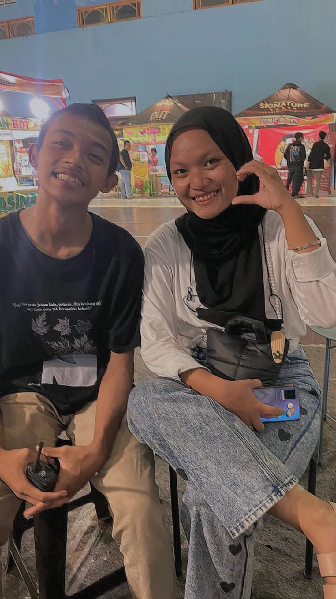
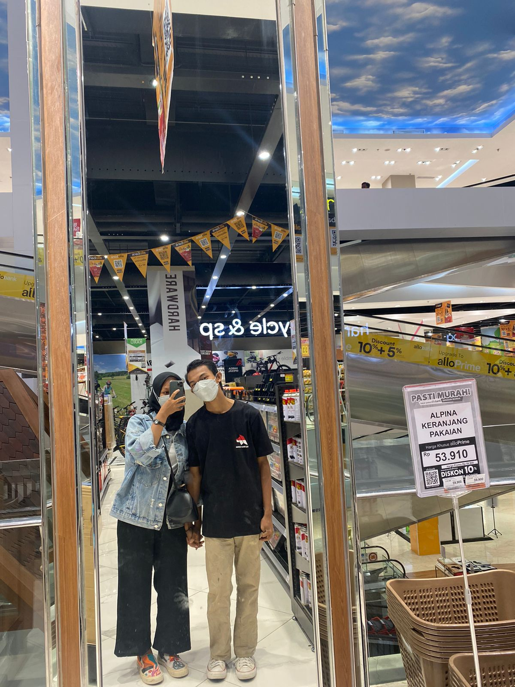

✨ Kenangan Indah ✨






📖 Cerita Kita 📖
Pertemuan Pertama
Pada saat itu aku ingin sekali kita berteman, namun kok aku memendam rasa begiitu dalann dan nyaman, akku juga berfikir mungkin ini cewek yang bisa merubah ku..
Petualangan Bersama
Setiap perjalanan dengan kamu adalah petualangan. Kita tertawa, berbagi cerita, dan membuat kenangan yang akan selamanya bertahan.
Momen Kebersamaan
Dalam keheningan atau keramaian, bersama kamu terasa seperti rumah. Setiap detik bernilai lebih karena ada kamu.
Cinta Sejati
Meskipun jalan kita terpisah, hati ini masih mengucapkan terima kasih. Kamu adalah guru cinta terbaikku.
💝 Doa dan Harapan 💝
Happy Birthday sayang, aku tau kita bukan siapa siapa lagi aku, belum bisa ngasi apa apa untuk mu aku ingin sekali mengulang rasa itu kembali namun aku mikir ini udh jadi bubur,dan mungkin kita bisa berteman tanpa ada rasa canggung di di dalam nya.
Selamat ulang tahun SITI ANDRIANIS semoga cita cita nya tercapai, Mas pengen kamu itu sukses dunia dan akhirat. semoga doa da kamu cepat di kabulkan oleh allah yaa wish you all the best. Selamat ulang tahun kamu yang masih ada kok sisa di hati ku Anjayy aku alay poll jijik lohh.